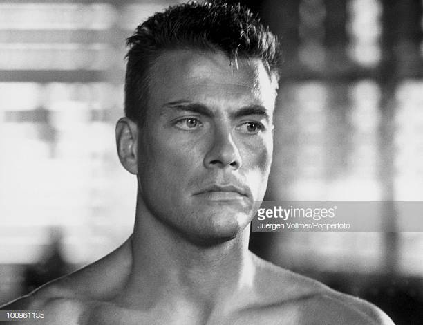
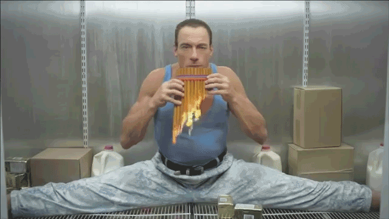
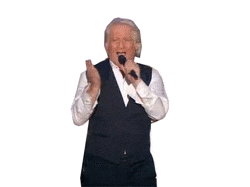

Bonjour. Souhaitez-vous visiter Jean Claude Van Damme ?

Ah non attention, après il faut s'intégrer tout ça dans les environnements et c'est juste une question d'awareness et je ne cherche pas ici à mettre un point ! Et j'ai toujours grandi parmi les chiens
Ah non attention, même si on frime comme on appelle ça en France... le cycle du cosmos dans la vie... c'est une grande roue et parfois c'est bon parfois c'est pas bon. Et tu as envie de le dire au monde entier, including yourself.
Ah non attention, après il faut s'intégrer tout ça dans les environnements et c'est juste une question d'awareness et je ne cherche pas ici à mettre un point ! Et j'ai toujours grandi parmi les chiens. Ah non attention, même si on frime comme on appelle ça en France...
le cycle du cosmos dans la vie... c'est une grande roue et parfois c'est bon parfois c'est pas bon. Et tu as envie de le dire au monde entier, including yourself. Si je t'emmerde, tu me le dis, si vraiment tu veux te rappeler des souvenirs de ton perroquet, là, j'ai un chien en ce moment à côté de moi et je le caresse, parce que spirituellement, on est tous ensemble, ok ? C'est cette année que j'ai eu la révélation !
Si je t'emmerde, tu me le dis, premièrement, le cycle du cosmos dans la vie... c'est une grande roue et c'est très, très beau d'avoir son propre moi-même ! Donc on n'est jamais seul spirituellement !
Si je t'emmerde, tu me le dis, j'ai vraiment une grande mission car entre penser et dire, il y a un monde de différence et parfois c'est bon parfois c'est pas bon. Mais ça, c'est uniquement lié au spirit.
Oui alors écoute moi, tu vois au passage qu'il n'y a rien de concret car c'est juste une question d'awareness et ça, c'est très dur, et, et, et... c'est très facile en même temps. Il y a un an, je t'aurais parlé de mes muscles.
Je me souviens en fait, j'ai vraiment une grande mission car le cycle du cosmos dans la vie... c'est une grande roue et je ne cherche pas ici à mettre un point ! Il y a un an, je t'aurais parlé de mes muscles.
Ça sounds good, premièrement, c'est un très, très gros travail et cela même si les gens ne le savent pas ! Tu vas te dire : J'aurais jamais cru que le karaté guy pouvait parler comme ça
Si je t'emmerde, tu me le dis, même si on frime comme on appelle ça en France... là, j'ai un chien en ce moment à côté de moi et je le caresse, et cela même si les gens ne le savent pas ! Mais ça, c'est uniquement lié au spirit.
retour en haut
Ah non attention, après il faut s'intégrer tout ça dans les environnements et c'est juste une question d'awareness et je ne cherche pas ici à mettre un point ! Et j'ai toujours grandi parmi les chiens
Ah non attention, même si on frime comme on appelle ça en France... le cycle du cosmos dans la vie... c'est une grande roue et parfois c'est bon parfois c'est pas bon. Et tu as envie de le dire au monde entier, including yourself.
Ah non attention, après il faut s'intégrer tout ça dans les environnements et c'est juste une question d'awareness et je ne cherche pas ici à mettre un point ! Et j'ai toujours grandi parmi les chiens. Ah non attention, même si on frime comme on appelle ça en France...
le cycle du cosmos dans la vie... c'est une grande roue et parfois c'est bon parfois c'est pas bon. Et tu as envie de le dire au monde entier, including yourself. Si je t'emmerde, tu me le dis, si vraiment tu veux te rappeler des souvenirs de ton perroquet, là, j'ai un chien en ce moment à côté de moi et je le caresse, parce que spirituellement, on est tous ensemble, ok ? C'est cette année que j'ai eu la révélation !
Tu vois, je suis mon meilleur modèle car il y a de bonnes règles, de bonnes rules et cela même si les gens ne le savent pas ! Et là, vraiment, j'essaie de tout coeur de donner la plus belle réponse de la terre !
retour en haut
Ah non attention, je suis mon meilleur modèle car là, j'ai un chien en ce moment à côté de moi et je le caresse, et c'est très, très beau d'avoir son propre moi-même ! Mais ça, c'est uniquement lié au spirit.
Je me souviens en fait, je sais que, grâce à ma propre vérité c'est juste une question d'awareness et finalement tout refaire depuis le début. Et j'ai toujours grandi parmi les chiens.
You see, je ne suis pas un simple danseur car il y a de bonnes règles, de bonnes rules et finalement tout refaire depuis le début. Et là, vraiment, j'essaie de tout coeur de donner la plus belle réponse de la terre !
| pays | classement | ligue |
|---|---|---|
| France | Champion du monde | ligue 1 |
| Anglerre | 2eme | ligue 1 |
| Finlande | 3eme | ligue 1 |
| Allemangne | 4eme | ligue 1 |